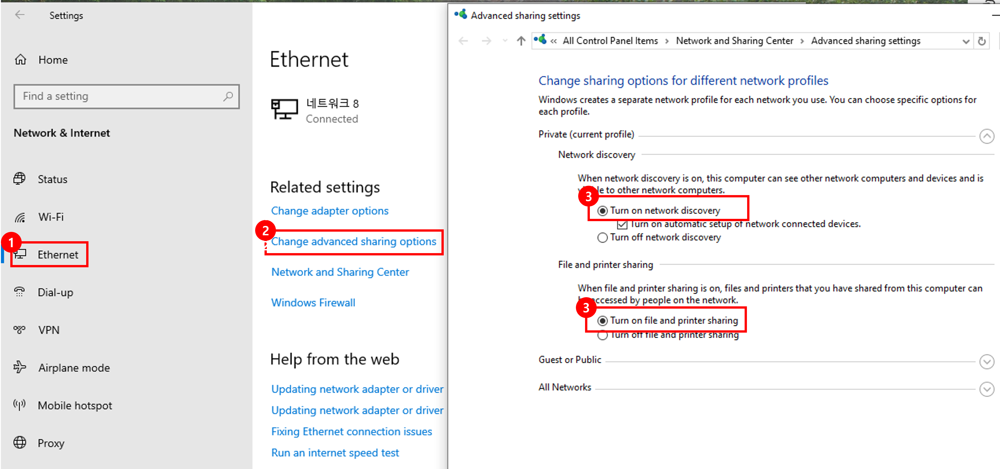
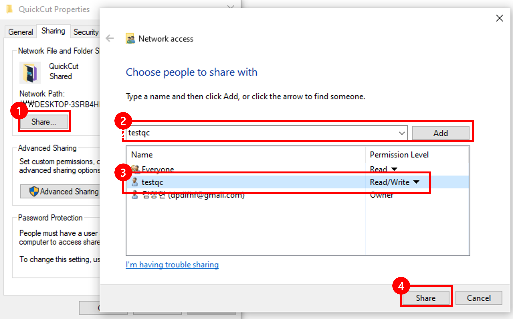

QuickCut uses SMB (Windows file sharing) to transfer video files between your mobile device and PC.
- 🔒 Only accounts you create can access your PC — safe on your home network
- 📶 Your phone and PC must be on the same Wi-Fi network
⚡ Already using SMB with another app (e.g. VLC, ES File Explorer)? Skip Sections 1 & 2 — go straight to Section 3.
👤 Already have a Windows local account? Skip Section 1 — go to Section 2.
Open Network & Internet Settings
Open Windows Settings → Network & Internet → click ① Ethernet (or Wi-Fi if on wireless).
Open Advanced sharing settings
Under Related settings, click ② Change advanced sharing options.
Turn on Network discovery & File and printer sharing
Under Private (current profile), enable both options ③:
- Turn on network discovery
- Turn on file and printer sharing
Save changes.

Open Settings → Accounts → Family & other users
Click ① Family & other users in the left sidebar, then click ② Add someone else to this PC. A Microsoft account dialog will open — click ③ I don't have this person's sign-in information.
.png)
Add a user without a Microsoft account
On the next screen click ① Add a user without a Microsoft account.
.png)
Enter a username and password
Fill in ① the username and password, then click ② Next.
Remember this username — you will enter the same name in the QuickCut mobile app's SMB Settings.
.png)
Account created
The new local account now appears in the list.
.png)
Open the QuickCut folder properties
Right-click the QuickCut folder → Properties → click the Sharing tab.
.png)
Grant access via Share...
Click ① Share.... In the Network access window, select your Windows account from the dropdown ② and click Add. Make sure the Permission Level is set to Read/Write ③. Click ④ Share to apply.

Open Advanced Sharing
Back in the Sharing tab, click Advanced Sharing. Check ① Share this folder and confirm the share name is QuickCut ②. Click ③ Permissions.
.png)
Add account and grant Full Control
If your account is not listed, click ① Add, type your Windows account name ②, and click OK. Select your account ③ and check Full Control – Allow ④. Click Apply → OK to close Permissions, then Apply → OK in Advanced Sharing, and finally OK in Properties.
.png)
To browse and edit videos directly from your PC on the mobile app, share the folder where your videos are stored.
Open folder Properties → Sharing tab → Share...
Right-click the folder containing your videos → Properties → Sharing tab → click ① Share...
Add your Windows account and set permission
Click the dropdown → select the Windows account you created in Section 2 → click Add. Make sure the Permission Level is set to ② Read/Write.
Click Share
Click ③ Share to apply. The folder is now accessible from the QuickCut mobile app via SMB browsing.

✅ All done! Open the QuickCut mobile app → SMB Settings, enter your PC's IP address and the Windows account credentials you just created.